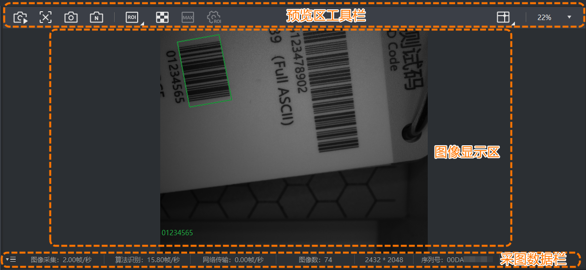
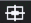

预览图像
客户端支持通过图像预览区查看读码器采集的实时图像。
图像预览窗口分为以下3个部分。

-
预览区工具栏：主要包括采图工具、ROI工具、辅助工具三类，具体功能请见本章节介绍。
-
图像显示区：预览读码器采集的图像。若使用多读码器工作，可通过设置画面布局同时预览多设备的图像采集效果。
-
采图数据栏：可通过左下角勾选需显示在图像预览区底部的采图数据，包括图像采集速度、算法识别速度、网络传输速度、图像数、分辨率、序列号等。
-
开启自适应调谐功能后，采图数据栏将显示自适应调谐中的进度。
-
若选择多画面布局，每个画面窗格上的悬浮工具栏仅包含部分工具。若需使用所有功能，可单击单画面窗格右上角的放大该窗格。
以下为预览区工具栏的各功能介绍。
采图工具
- /
-
开始或停止采集图像。该操作默认可通过快捷键F2实现，也可在主界面菜单栏的中自定义快捷键。
说明该功能和快捷工具栏的/功能一致。
- /
-
开始预览或结束预览实时图像。若结束预览，仅关闭实时画面，不会影响读码器正常取流。
- /
-
抓取当前图像或连续抓取多张图像。若选择连续抓图，图像右侧会提示已抓取的图像数量，再次单击可停止抓图，并支持快速跳转到本地保存图像的位置。
说明可通过菜单栏设置抓图和连续抓图的保存路径、图像格式、保存策略、图像命名规则等，具体操作可参考客户端存图。
 /
/ROI工具
ROI工具包含算法ROI和对焦ROI两类，支持控制软件仅对特定区域执行算法识别或对焦操作。您可使用ROI工具灵活划定区域，排除背景干扰，提升读码准确性和对焦效率。
|
对比项 |
算法ROI |
对焦ROI |
|---|---|---|
|
功能介绍 |
算法ROI功能支持仅在选定的感兴趣区域内读码，其它区域不做算法处理，以提高读码效率。 |
对焦ROI支持仅对选定的感兴趣区域内图像进行清晰对焦。 说明
该调焦区域对功能同样生效。 |
|
适用场景 |
存在多余条码干扰，只需要读取特定区域内条码 |
待测条码和背景的颜色、对比度差异大等 |
|
绘制方法 |
支持手动绘制单个或多个ROI、快速绘制棋盘格ROI。具体操作请见表格下方介绍 |
支持手动绘制单个ROI。具体操作请见表格下方介绍 |
|
其它功能 |
|
暂无其它功能 |
ROI的绘制方法共有三种：绘制对焦ROI、手动绘制算法ROI、快速绘制棋盘格ROI。
调整单个ROI位置和大小的方法有以下3种：（1）直接拖动绘制好的ROI边框进行调整；（2）右键单击ROI并选择ROI设置调整ROI的顶点X/Y坐标和高度/宽度；（3）在中调整ROI大小和位置参数，具体参数释义请参考码制选择。
若删除某个ROI，剩余ROI的索引号不会自动递补。例如，若当前存在3个ROI，索引号分别为1,2,3。假设删除2号ROI，3号ROI仍保持原索引号3，后续新绘制的ROI将填补空缺索引号（即成为新的2号ROI）。
对焦ROI绘制
若需绘制对焦ROI，可参考以下步骤。
-
单击右下角的小三角，选择对焦ROI。
-
单击，鼠标在实时图像区变为绘制状态，即“＋”。
-
长按鼠标左键框选调焦区域，松开鼠标则绘制完成。
此时实时图像区不会显示绘制区域，可通过确定调焦区域的顶点坐标和宽度/高度已同步修改。
算法ROI手动绘制
若需手动绘制算法ROI，可参考以下步骤。
-
单击右下角小三角，选择算法ROI。
-
单击，鼠标在实时图像区变为绘制状态，即“＋”。
-
长按鼠标左键框选需要绘制算法ROI的区域，松开鼠标则绘制完成。
-
（可选）再次单击可绘制多个ROI。
算法ROI棋盘格绘制
若需快速绘制棋盘格ROI，可参考以下步骤。
-
单击，打开创建棋盘格ROI窗口。
-
填写待绘制ROI的行数和列数，并单击确定。
-
（可选）鼠标置于算法ROI区域的外边框，根据需求调整棋盘格ROI整体的大小和位置。若效果不满足需求，可单击

将棋盘格ROI最大化后重新调整；或单击清除该棋盘格ROI。 -
单击生成棋盘格ROI。
 清除该棋盘格ROI。
清除该棋盘格ROI。